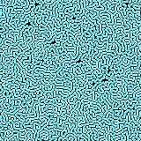
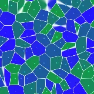

ALL IN ONE
One workbench
for all your AI.
macOS · Windows · v0.4.120
SCROLLWe don't build another AI.
We bring the best ones in.
One canvas,
all of your work.
Point at anything to see what it is


Say one line,
it runs to the finish.
This week’s builds
All of these started
with one line.
Workbench
People and AI on one canvas
Start with one line
Double-click the canvas, pick an AI engine, say one line, and it gets to work
Chat, edit, watch it ship
AI chat, terminal and web page, side by side in one workspace
Preview any media
Images, video, audio and 3D models, right in your workspace
Point AI at it
Files, folders, skills, plugins, browser tabs: one @ puts them in the chat
One click, pro prompt
455 design and motion entries: one click drops a pro prompt into the chat
Execute
How work gets split up and finished
Track every step
AI breaks the job into steps and ticks each one off
Office work, handled
Add the Excel plugin to read and write sheets, then hand off the slide deck too
Team up
How one person leads a team of AI
Several AIs at once
Three engines, three projects, all running at once with no crosstalk
Split it across a team
One request, several agents in parallel: see who is running and who is done
Est. ~18k tokens
Hand over keys safely
API keys, private keys, payment keys live in your local vault; values never enter the chat or reach the model
Manage
Staying on top of it all
Every project at a glance
One card per project; drag it to change status
To do2
In progress32
Done12
Progress, logged for you
Chats, AI run time and git commits become bars and milestones
Watch your quota
Quota and reset time for every engine, usage from today back to 30 days
Print the weekly bill
What the week cost, printed as a receipt
Notes that file themselves
Files land in the inbox, AI plans the filing, and it all links up
Take it.
Install and go — no extra setup
All builds and notes
Which chip?Top-left → About This Mac, read the “Chip” line. M1 / M2 / M3 / M4 take Apple silicon; a Mac from before 2020 takes Intel.
macOS is notarized（notarized） — double-click and it opens, no Gatekeeper prompt.
Windows builds are unsigned — on first run SmartScreen says “Windows protected your PC”; click “More info → Run anyway”.
Still on macOS 11?Stay on 0.4.113 (Apple silicon · Intel). That build lacks this release’s dependency security updates.
Eas-Term
Your AI workbench · eas.biily.top